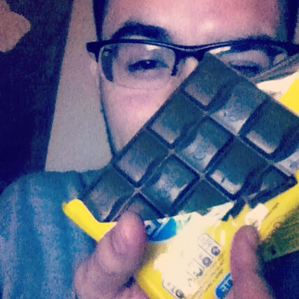

CURRICULUM VITAE... quer dizer, quase isso.
Wpp: +55(49)9805-8710
Bom, meu nome é Adriél Schmitz J. de Paula, e sim,
tenho um nome de menina que é meu sobrenome... Nasci no dia 10
de Abril de 1996, o mesmo ano em que os Mamonas morreram, se bem
que isso não tem importância nenhuma, é só pra parecer que sei um
pouco de história mesmo. Em relação à trabalhos realizados, deixa
eu ver... nao fiz nada de importante, só os trabalhos do curso
mesmo. Bah, é melhor eu ilustrar eles em uma tabela, bom que já
uso alguma kkkk.
| TABELA DE TRABALHOS |
| UNIVERSIDADE FEDERAL DA FRONTEIRA SUL |
| SEMESTRE |
DISCIPLINA |
NP1 |
NP2 |
| 1º |
Algoritmos |
Jogo de empurrar caixas(Scratch) |
Agenda de Contatos(C ANSI) |
| Circuitos |
Jogo par ou impar(Protoboard) |
Conversão de Asci para Braille(Proteus) |
| 2º |
Estrutura de Dados I |
Jogo de Dominó com listas(C ANSI) |
Dois algorítmos de ordenação(C ANSI) |
Sistemas Digitais |
Máquina de refrigerante(VHDL) |
Demonstração em vídeo de um MIPS(VHDL) |
| 3º |
Estrutura de Dados II |
Arvore AVL e Rubro Negra(C ANSI) |
Arvore B e Ordenação de Arquivos(C ANSI) |
| Organização de Computadores |
Criptografia(ASSEMBLY) |
Memória Cache em geral(Artigos e Apresentações) |
| Programação I |
Trabalhos em geral(JAVA) |
Jogo 21 com interface gráfica(JAVA) |
Antes de continuar, primeiro vou deixar uma COISA BEM CLARA...

Piada padrão Everton de qualidade kkkk
Agora um pouco sobre mim: Bonito, Rico, Alto, Gênio, Educado,
Engraçado, Popular e só um pouco Mentiroso... Apesar de fazer
Ciência da Computação, curto esporte e tudo mais, meus amigos
me dizem que eu sou o maior poser do curso por nao jogar LOL
nem CS. Nasci em Rondônia e nao, eu nunca vi um indio na vida.
Fui pra Curitiba com 17 anos estudar e porque minha irmã morava
lá, o estudo nao deu muito certo no primeiro ano, porém consegui
emprego no T.I da GVT de Curitiba. Fiquei um ano trabalhando até
que deu certo de vim pra cá estudar, entrei no curso sem saber
por#% nenhuma, mais perdido que tudo, até que as coisas foram
se ajeitando... Ta bom, já está bem grande isso, a professora
tem outras coisas importantes pra fazer kkk. Vou deixar minha
foto de perfil do Facebook aqui e encerrar.
--------------------------------------------------------------------------------------
Antes que eu me esqueça queria desejar um ótimo natal a todos...
que voces ganhem muitos chocolates...
